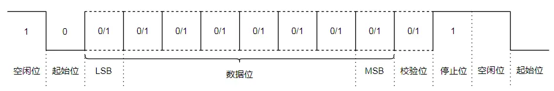

通信协议¶
基础知识¶
并行与串行：并行是指数据可以同时传送，而串行是指数据必须一个接着一个地传送。
单工与双工：单工是指数据只能在一个方向上传输，不能双向传输。双工是指数据可以在两个方向上传输。
半双工与全双工：半双工是指数据可以在两个方向上传输，但是不能同时进行。全双工是指数据可以在两个方向上同时传输。
波特率：用于描述UART通信时的通信速度，单位为bit per second，即每秒传送的位数。
UART¶
UART——通用异步收发器，是一种通用的串行、异步通信总线，该总线有两条数据线，可以实现全双工的发送和接收。
帧格式¶

- 空闲位：高电平，表示没有数据传输
- 起始位：低电平，开始传送数据
- 数据位：5~8位，先发数据的低位，再发高位
- 校验位：奇偶校验，将数据位加上校验位，1的位数为偶数（偶校验），1的位数为奇数（奇校验）
- 停止位：高电平，表示数据传输结束
缺点¶
1.电气接口不统一
UART只对信号时序进行了定义，而未定义接口的电气特性；
UART通信时一般直接使用处理器使用的电平，即TTL电平，不同处理器不能直接通信；
UART没有规定不同器件连接时连接器的标准，所以不同器件之间通过UART通信时连接很不方便。
2.抗干扰能力差
UART使用TTL信号来表示0和1，但TTL信号的抗干扰能力很差，数据在传输过程中很容易出错。
3.通信距离极短
因为TTL信号抗干扰能力差， 所以其通信距离也很短，一般只能用于一个电路板上的两个不同芯片之间的通信。
RS232协议¶
RS232协议是一种用于串行通信的标准，规定采用了一个标准的连接器，规定了统一的引脚和电平标准。
IBM对RS232协议进行了简化，现在工业控制的RS232接口一般只使用RXD、TXD、GND三条线。
该标准规定逻辑"1"的电平为-3V到-15V，逻辑"0"的电平为+3V到+15V，其传送距离最大可达15M。
电平转换¶
虽然很多处理器都会集成UART控制器，但是处理器产生的信号一般都是TTL信号而不是符合RS232标准的信号，所以一般我们还需要在处理器的外部去添加电路对信号电平进行转换。
缺点¶
1.接口的信号电平值较高，容易烧坏芯片，需要电平转换才能与TTL电路连接
-
通信速度较低
-
抗噪声干扰性弱
-
传输距离较短
RS485¶
RS485协议能在远距离条件下以及电子噪声大的环境下有效传输信号，该标准允许连接多个收发器，这样可以利用单一的RS485接口建立起一个设备网络。
RS485采用差分信号传输，两线间的电压差为+2V到+6V表示逻辑"1"，-2V到-6V表示逻辑"0"，这样即使一条线上出现噪声也不会影响信号的传输。
使用差分信号极大地减少了噪声信号的干扰，延长了通信距离，最大可达1500m。
RS485接口信号的电平比RRS232降低了，所以也不易损坏接口电路的芯片，且该电平与TTL电平兼容。
RS485采用两线制，这种接线方式为总线式拓扑结构，在同一总线上可以同时存在多个节点。因为采用两线制，数据的发送和接收都要使用者这对差分信号线，发送和接收不能同时进行，所以采用半双工的方式工作。
优点¶
- 接口电平值较低，不易烧坏芯片
- 通信速度快
- 抗噪声干扰性强
- 传输距离较远
- 可实现多节点组网
I2C¶
I2C总线是一种串行的、半双工的总线，主要用于短距离、低速的芯片之间的通信。I2C总线有两根双相的信号线，一根数据线SDA用于收发数据，一根时钟线SCL用于时钟同步。将芯片与总线对应的线相连即可通信。
I2C总线¶
I2C总线是一种多主机总线，连接在I2C总线上的器件分为主机和从机。通信必须由主机发起和结束，从机负责响应。每个连接到I2C总线上的器件都有一个唯一的地址(7bit)，且既可以当主机也可以当从机，但同一时刻只能有一个主机。
主机在发送起始信号后，必须先发送一个字节(8bit)的数据，该数据的前7位表示从机地址，最后一位表示字节的传送方向。总线上所有的从机都会收到该数据，然后与自己的地址进行比较，如果符合就返回一个ACK信号，再根据数据传送方向将自己定位为发送器或者接收器。
数据传送时，先传送最高位，后传送低位，发送器发完一个字节的数据之后接收器必须发送1位ACK信号，表示数据接收成功。
同步信号¶
I2C总线在进行数据传送时，SCL必须保持低电平，SDA可以任意变化；当SCL为高电平时，接收器从数据线上读取一位数据，此时SDA不允许变化。